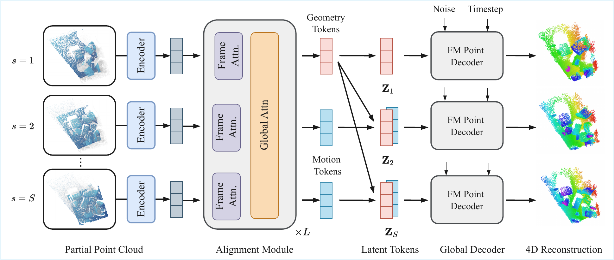
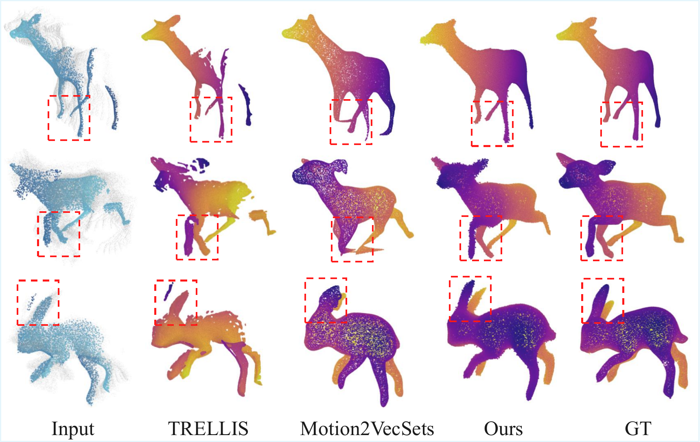
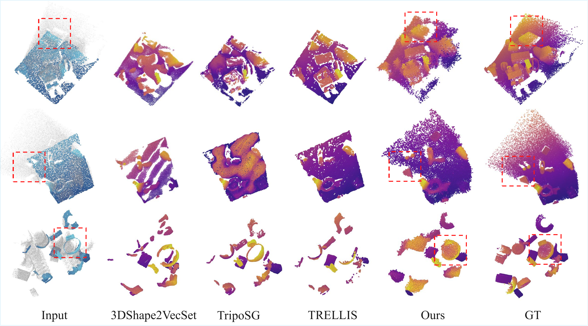
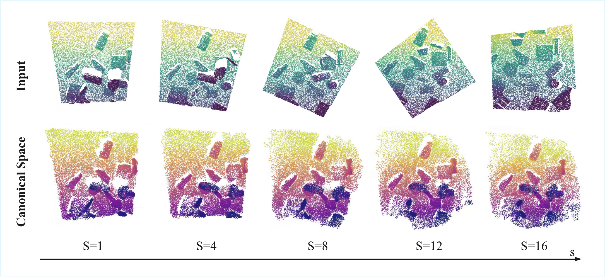

1TU Munich · 2Google · 3Munich Center for Machine Learning
🚧 Page under construction
We address 4D reconstruction from partial point cloud sequences, where depth-sensor observations are incomplete, unordered, and lack explicit temporal correspondences. This geometry-only setting is challenging due to missing observations and ambiguous dynamics. While recent progress has largely relied on image-based methods, existing point-based approaches typically focus on single objects, assume relatively complete inputs, or require explicit correspondences.
To address these limitations, we propose DynaTok, a point-based framework for correspondence-free 4D reconstruction from partial point cloud sequences without images. DynaTok encodes frames into compact latent tokens, aggregates incomplete observations over time with a Transformer-based spatiotemporal encoder, and decouples geometry and motion through residual tokens in a unified model. A flow-matching decoder then reconstructs complete, temporally consistent 4D point-cloud sequences conditioned on the latent tokens.
Experiments on object- and scene-level benchmarks demonstrate improved reconstruction quality and temporal coherence from partial point cloud observations.




@inproceedings{chen2026dynatok,
title = {DynaTok: Token-Based 4D Reconstruction from Partial Point Clouds},
author = {Chen, Weirong and Tateno, Keisuke and Matsuki, Hidenobu and
Niemeyer, Michael and Cremers, Daniel and Tombari, Federico},
booktitle = {International Conference on Machine Learning (ICML)},
year = {2026}
}